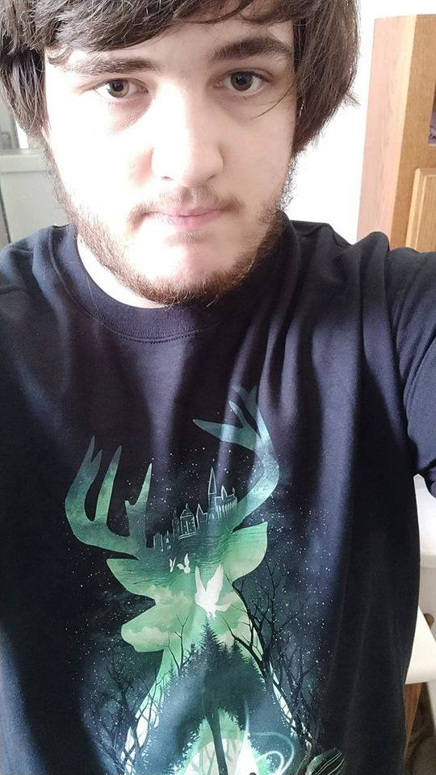
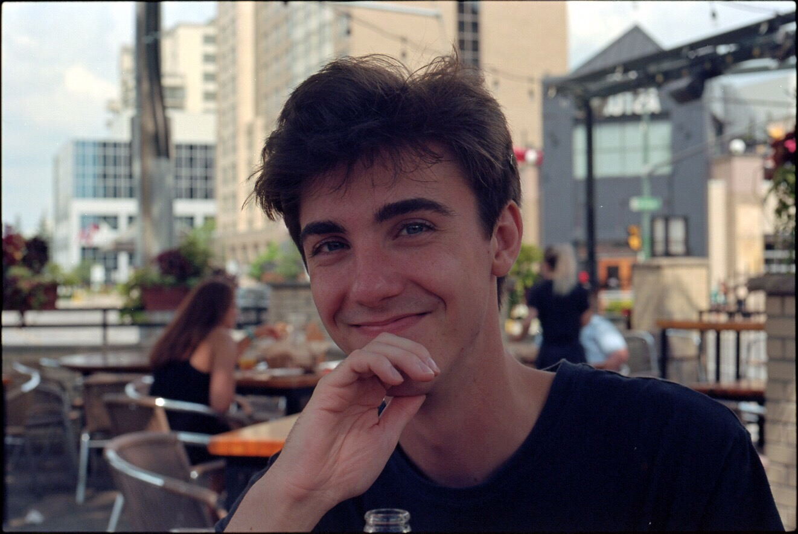
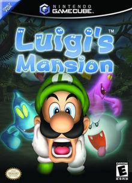

 Austin's bio: YOOOOOOOO Hello, my name is Austin Caron, I am from Chatham Ontario and obviously, I am in the IDP course set. Some hobbies of mine are making mods for Warcraft 3 and DotA 2, playing video games (mostly the new Spider-Man, Super Smash Bros. Melee, and PC games like League of Legends or WoW), and really anything extremely nerdy like watching anime or reading manga. This is the first time I have moved away from home, in the previous semester I had taken the VGD course and took the train everyday from Chatham to London and that was not an option I was willing to take again this semester. I am actually really excited to be working with Patrick on this project and the Final Intergrated project as well. We spent some time at McDonald's and realized we are extremely similar and enjoy the opposite aspects of this program. I really enjoy the programming side, which makes things great because it means I can give him all of the messy stuff to make it pretty since he has that eye that I don't have, and he can give me all his code to clean up!
 Patrick's bio: Hey! My name is Patrick Bradley. I'm 19, from London Ontario and enrolled in the Interactive Media Design program at Fanshawe College! An interesting fact about myself is that due to some of my ancestry, I go by my middle name instead of my first name. My hobbies revolve around videogames (mostly CS:GO, Overwatch, Super Smash Bros Melee), filmmaking, music, photography and hockey! I love being at the downtown campus because not only does everything feel new, there are a ton of restaurant choices in the area! I feel that by chance, Austin and I will be an extremely compatible team as we share a lot of the same interests and as Austin has previously discussed, we are both confident in our skills in this program but from an opposite standpoint. Although I find the programming side of this program a bit more challenging, I hope to expand my skills in this area! Last but not least, I am a music producer. I use FL studio and work mainly with genre's such as chiptune, emo rap, cloud rap and trap with inspiration taken from these genre's as well as indie rock, dream pop, house and nightcore. The embedded soundcloud link at the bottom of this website will not only be one example of my music, but also background audio for the user to enjoy.

Austin: Bar none, it's Super Mario Sunshine. The freedom of movement, unique water mechanic, amazing design and visuals even for today, and that Nintendo quality that just makes you never want to put the controller down. This game can be played in a multitude of ways and even watching it can be an amazing time, seeing someone manipulate the mechanics in ways you never thought of. Great game that stood the test of time
Patrick: Luigi's Mansion has to be my favourite videogame of all time. Not only the first GameCube game ever realeased, but arguably one of Nintendo's scariest games ever released as well. Playing this game never gets old as I have played it hundreds maybe even thousands of times dating all the way back to when I was around 6-7 years old. If you are looking for a shorter videogame complete with an emotional and intense storyline this game is a great example of just that.